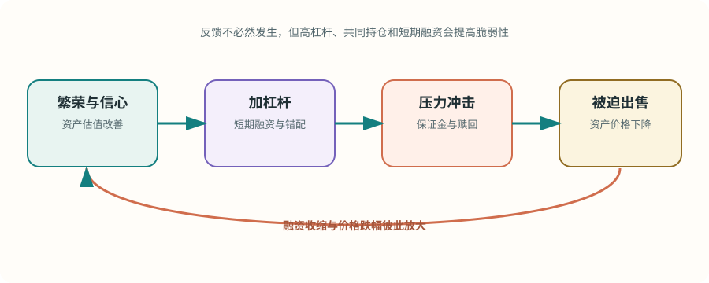

货币银行学 · 第 22 章
为什么局部金融冲击会变成系统性危机？
从期限错配、杠杆与流动性挤兑出发，理解明斯基融资结构、2007–08 年金融危机、传染机制和宏观审慎政策的风险监测逻辑。
一家机构因亏损而倒闭，不一定引发危机；但如果其他机构同时持有相似资产、依赖同一个短期融资市场，或者把同一类证券当作抵押品，局部损失就可能变成整个金融体系的融资紧缩。判断系统性风险，核心问题不是“谁最先亏损”，而是“哪些负债、交易对手和市场功能会在压力下同时失灵”。
金融危机与系统性风险不是同一个词
金融危机常指金融资产价格、融资条件和金融中介功能发生大幅、急剧恶化，导致信用供给、支付清算或风险分担受损。系统性风险则强调一家机构、一个市场或一种资产受到冲击，可能通过网络联系、共同持仓和行为反馈损害整个金融体系的重要功能。
需要区分偿付能力和流动性：资产长期价值不足以覆盖负债时是偿付能力问题；资产价值可能足够，但今天无法筹得必须支付的现金，是流动性问题。一次挤兑可能先表现为流动性危机，迫使资产折价出售后再演变为偿付能力问题。
危机通常还伴随信息不对称：市场参与者无法迅速区分健康机构和脆弱机构，便可能对一组机构同时减少融资。这种不加区分的撤资会放大冲击。
明斯基：繁荣为什么可能积累脆弱性？
明斯基金融不稳定假说强调，经济扩张期间的乐观预期、资产价格上涨和信用扩张可能改变借款人的现金流结构。三个经典融资类型不是必须依次经历的历史阶段，而是识别融资脆弱程度的分析类别：
| 融资类型 | 现金流与债务偿付关系 | 主要脆弱点 |
|---|---|---|
| 对冲融资（hedge） | 预计经营现金流可覆盖到期本金与利息 | 经营现金流波动 |
| 投机融资（speculative） | 可支付利息，但部分本金需再融资 | 续贷与融资期限 |
| 庞氏融资（Ponzi） | 经营现金流不足以支付全部到期本息，依赖新增融资或资产出售 | 资产价格与融资可得性 |
这里的“庞氏融资”是明斯基的现金流分类，并不等同于法律上的庞氏骗局。模型提出一种内生脆弱性的可能路径，而非保证每个繁荣周期都会爆发危机。

2007–08 年危机：从抵押贷款到融资市场
2007–08 年的危机是理解系统性传染的重要历史案例。美国部分次级住房抵押贷款质量恶化，相关证券化产品损失上升；复杂资产使机构持仓和最终风险承担者难以识别；批发融资和回购市场压力增大。2008 年 9 月雷曼兄弟破产后，机构间信任进一步受损，货币市场基金和短期融资市场出现严重压力，信用供给紧缩。美联储历史资料将其与住房泡沫破裂、金融机构杠杆和融资脆弱性联系起来。[1]
不能把整场危机简化成“房价下跌导致全部银行倒闭”：贷款发放标准、证券化激励、评级与风险评估、衍生品敞口、资本缓冲、流动性准备、监管缺口和跨机构联系共同参与了危机形成。危机冲击又通过信贷约束、资产价格、财富损失和不确定性传播到就业与实体投资。
同样地，把单一机构的损失与整个系统的损失相加会重复计数：金融机构彼此持有资产和负债，评估系统性风险要追踪最终风险敞口以及资产负债表之间的关联。
危机的四条传染路径
- 交易对手渠道：直接债权、衍生品、回购和清算关系使一家机构的违约损失影响其他机构。
- 共同持仓渠道：机构持有相似资产，一方抛售压低市场价格，另一方因公允价值损失或保证金要求同步出售。
- 融资流动性渠道：短期融资拒绝续作、抵押品折扣提高，迫使机构筹集现金、减少贷款和做市。
- 信息与预期渠道：公众对不透明风险敞口产生怀疑，集中赎回或转移存款，导致健康机构也承受压力。
FSB 2025 年关于非银行金融中介杠杆的报告特别强调，杠杆可通过关键市场和银行—非银行之间的联系放大系统压力。[2]
传染不总是以违约开始。有时证券价格和融资条件的同步恶化，比单个违约事件更早暴露市场功能失灵。
宏观审慎监管怎样处理“大家一起冒险”？
微观审慎监管关注单一机构是否有足够资本、流动性和风险管理；宏观审慎政策关注即使每家机构单独看似合规，整个体系仍可能因为共同持仓、信用周期和相互依赖而过度脆弱。
逆周期资本缓冲（CCyB）是典型工具：当系统性信用风险积累时，监管部门可要求银行持有额外资本缓冲，在下行期有空间吸收损失并维持信贷。巴塞尔委员会将其目标表述为缓解过度总量信用增长可能导致的银行体系风险。[5]
其他工具包括针对房地产贷款的贷款价值比（LTV）和偿债收入比（DSTI）限制、系统重要性机构附加要求、流动性监管、压力测试、抵押品和保证金安排，以及对非银行机构杠杆与期限错配的监测。各种工具作用于不同风险来源；不能把一个资本比率当作所有系统性风险的万能指标。
怎样看预警指标，避免“一个数字预报危机”？
BIS 发布的私人非金融部门信贷／GDP 缺口是信贷占 GDP 比率相对其长期趋势的偏离，常被用作银行体系风险的早期预警指标。该趋势由统计方法估计，结果会受到数据修订、趋势估计、样本起点和国别制度影响。[3]
债务偿付率（DSR）则衡量一定收入中用于本金和利息支付的比例，提供对未来现金流压力的观察。BIS 把信贷缺口、DSR 等指标列为早期预警工具，但并不把它们当作精确预测某个月爆发危机的时钟。[4]
风险仪表盘：同步跟踪信贷扩张、杠杆、期限错配、资产估值、银行资本与流动性、融资集中度、交叉持仓和政策空间。多个变量朝不利方向同时变化，通常比单个指标越过某个阈值更值得调查。
交互练习：杠杆如何放大资产损失？
教学案例：资产负债表压力测试
假设投资机构持有 100 单位资产，负债为 80 单位，因此净资产为 20。观察资产价格下降时净资产损失占比；不包含利息、保证金、税费和资产再估值。
初始净资产 20.00；冲击后净资产 10.00；净资产损失 50.00%。该结果是教学压力测试，不是未来价格预测。
核心结论与边界
- 系统性风险来自机构之间的合同和市场联系，以及杠杆、流动性和共同持仓的反馈。
- 明斯基的三类融资结构刻画现金流脆弱性，不是必然发生的时间序列。
- 宏观审慎政策处理系统层面同步冒险的问题，不能被单一机构资本监管完全替代。
- 信贷缺口与债务偿付率可以提供预警，却不能保证预测危机发生时间。
Worked reasoning
算一遍：杠杆风险和单笔违约风险为何不能混为一谈？
教学资产负债表：资产 100、债务 80、权益 20，初始杠杆（资产／权益）为 5 倍。假如资产价格下跌 10%，资产变为 90，而假设债务短期仍为 80，权益变为 10，权益损失达到 50%；跌幅若达到 20%，权益变为零。并不是资产跌 10% 就有 10% 的贷款违约率。
系统性问题在于许多机构可能同时持有类似资产、被要求追加保证金或出售抵押品。若它们同步抛售，市场价格可能继续承压，形成反馈。监管关注的是共同持仓、资金结构和交易对手网络，不只是单笔贷款的 PD 值。可对照FSB 对非银行杠杆的政策研究。
若把案例迁移到真实地区或机构，应重新检查合同、统计口径和时点。
Connect the ideas
把这个问题放进更大的金融系统
下面是与本节机制直接相关的三个问题。每个链接都进入另一篇文章的具体解释位置；当前文章无需依赖它们即可独立理解。
参考资料与口径
- Federal Reserve History：Financial Crisis of 2007–08
- FSB：Leverage in Nonbank Financial Intermediation（2025）
- BIS：Credit-to-GDP gaps
- BIS：Early warning indicators
- Basel Committee：Countercyclical capital buffer
引用资料支持相应定义、历史事实或研究观点；文中的标为“教学示例”的数值不代表真实经济数据。政策规则、统计口径和发布版本可能变化，使用时应核对来源页面的时间和适用范围。